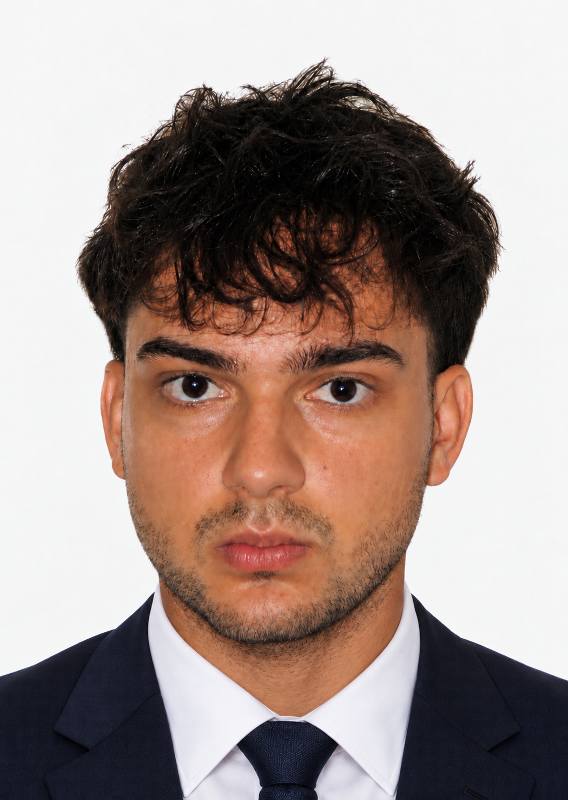

About
Juan Bernardo Pastuszak
I’m an aerospace engineer focused on flight dynamics and control, currently studying for an MSc in Advanced Aeronautical Engineering at Imperial College London.

I graduated from the University of Bristol with First Class Honours in Aerospace Engineering and the Royal Aeronautical Society Prize, awarded to the highest-achieving final-year student in the cohort. In November 2026, I won the BAE Systems University Scholarship Award from the Worshipful Company of Coachmakers.
My interest in control took shape during my second year at Bristol. I was fascinated by the idea of describing a system mathematically, understanding how it behaves and designing a controller that allows it to operate autonomously and reliably. That is the direction I want to pursue in my engineering career, starting with a graduate role in the UK from September 2027.
On my team’s ground-based satellite demonstrator, I connected camera tracking to a reaction wheel so it could turn itself towards a target. I also designed a pitch controller for a simulated F-16 that adapts to airspeed. At Imperial, I’m working out the dynamics of an electric tail-sitter UAV and developing its control in simulation, starting with hover and working towards transition and cruise.
I enjoy using models and data to weigh trade-offs and make decisions, then checking how those decisions work in practice. In my Bristol research, I used machine learning to optimise composite forming in simulation, then made and tested the designs.
Away from engineering, I enjoy football, cooking and playing the piano. I started piano at ten and achieved Grade 8 with Distinction during my A levels. After a break during university, I’m playing again as a way to relax.